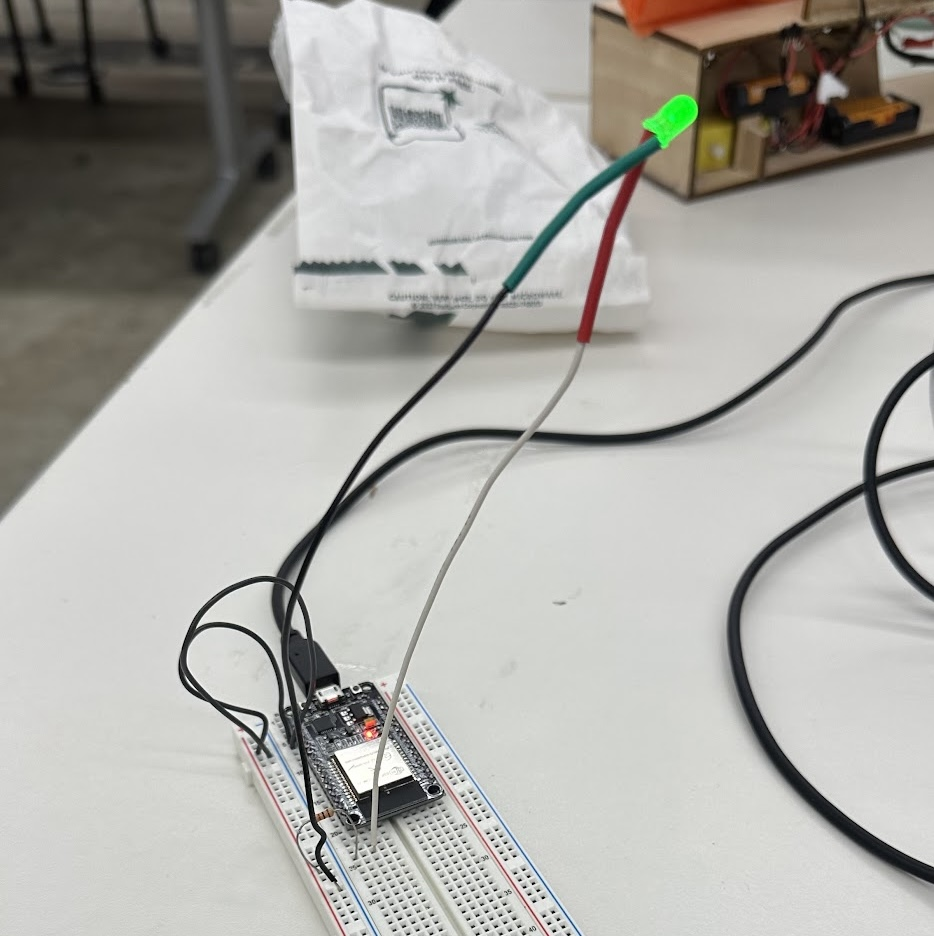

Week 4: Microcontrollers

Assignment 1: Make Arduino Do Something
This week featured a staggering series of undiagnosable failures. Here is an absurdly simple circuit that I spent four (4!) hours trying to get to work.

This, unfortunately, is my submission to this week's assignment. I used the arduino reference manual, gpt, and extensive googling to try and figure out why my serial monitor was either receiving only garbarge signals, or zeros.
Unfortunately, literally all I could figure out how to get this thing to do was turn on a green LED. Without a button.

Maybe someone can help me fall in love with electronics again. I'm currently feeling pretty upset with them.
LED circuitry
I tried to do something simple next - just get 4 LEDs to work in a circuit.

This actually worked! Notice how there was no microcontroller to make things difficult.

Soldering
Given that my electronics were such a staggering fail, I decided to practice a core skill that would be useful in future projects -- soldering. I made a 4-LED array of white lights, wired in parallel, each with its own resistor attached to it.
And I used this to upgrade my lamp from last week, wiring it with switches for both the lights and fan mechanism so that both can be turned on independently.

Then I upgraded all of the components, including designing and lasering a new gear for the quieter motor, and soldering everything together.

Conclusion
This week was rough. Microcontrollers are so fickle -- it was unclear what was going wrong, and even more frustrating, it was unclear how to diagnose what might be going wrong -- especially when the issues may be physical, or may be a busted board, or a loose wire. After you try 100 different things and none work, it may be time to take a breath (or get a new esp32).